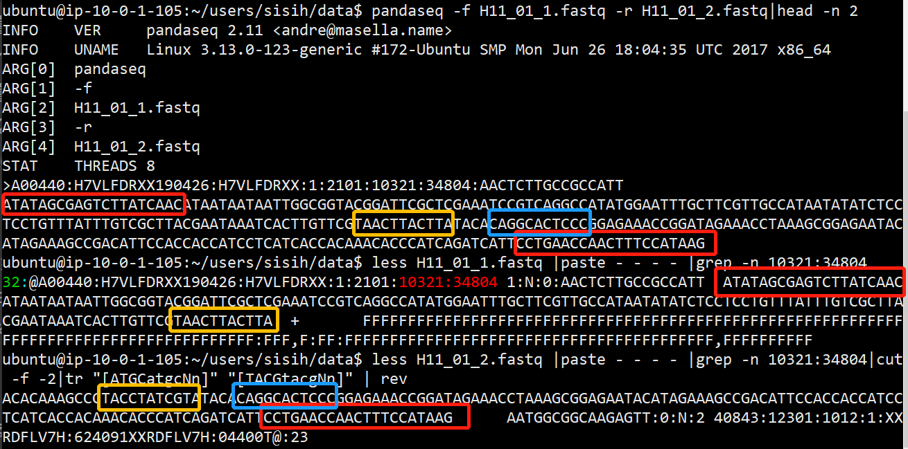

Illumina Sequencing (paired-end)
Paired-end sequencing
Paired-end sequencing allows users to sequence both ends of a fragment and generate high-quality, alignable sequence data.
Paired-end sequencing facilitates detection of genomic rearrangements and repetitive sequence elements, as well as gene fusions and novel transcripts.
1.基因组重排
2.重复序列元素
3.基因融合
4.新颖的转录本
Paired-end文库：在两端的接头上tagment DNA, add adapter sequences（都加上测序引物结合位点）
第一轮测序完成后，去除第一轮测序的模板链，用对读测序模块(Paired-End Module)引导互补链在原位置再生和扩增，以达到第二轮测序所用的模板量，进行第二轮互补链的合成测序。
原因：
1.Illumina测序可以测度reads的长度有限，一开始质量较高，后面质量较低，因此可以进行两端测序，然后通过重叠部分拼接，以达到高质量的测序。
2.对于重复序列，Single-Read只会有序列信息，难以判断这个重复序列的位置，在比对时容易出错，错位。但是pair-end知道双端的间隔距离，能正确的确定位置。
双端测序有R1和R2文件，它们的每一条都对应于同一reads，在R1和R2是反向互补序列，但是他们分别从两端开始测，一个单独的 Read 其长度都超过整个待测序列的一半，根据两个 Reads 重合的部分进行拼接。
用pandaseq验证这件事情
1 | # pandaseq拼接 |
发现：
1.pandaseq的结果顺序与原来顺序不一样，第一条从原fastq文件的31条reads开始。拼接的确实是两个文件同一位置read.
2.确实反向互补序列用中间重合进行了拼接，可以看下结果，拼接序列的前半部分主要来源于R1，后半部分主要来源于R2.

3.但是发现其实反向序列结尾部分，也就是rev过后的开头部分其实不太对得上所谓的重合部分，看了下质量，这部分质量偏低。感觉上反向序列随着测序长度增加质量衰减得更快，似乎。后验证这份文件是没有overlap，多出来的很短一段overlap可能就是by chance.
Nextera™ DNA Flex
Library prep
- Uses an enzymatic reaction, called tagmentation, to fragment DNA and add adapter sequences in only 15 minutes 酶促反应DNA fragment & 添加标签adapter sequence
- Innovates sample normalization at inputs > 100 ng 样品归一化，应该是为了达到足够的扩增量
If you are using less than 100 ng DNA input, the quantification of the initial DNA sample to determine the number of PCR cycles required is recommended.
When input is < 100 ng, use a fluorometric-based method to quantify DNA input. Avoid methods that measure total nucleic acid, such as NanoDrop or other UV absorbance methods.
- Streamlines sample pooling and sequencing
- Reduces excessive pipetting and overall hands-on time, while optimizing use of consumables by using master mix reagents
- Generates libraries from as little as 1 ng input
- Prepares libraries directly from blood or saliva samples 直接从血液或唾液样本中制备文库
Blood and saliva are heterogeneous sample types, therefore the ability of Nextera DNA Flex to generate normalized libraries depends on the total amount of DNA obtained from the lysed sample.
workflow
gDNA, Blood, saliva
Tagment Genomic DNA
This step uses the Bead-Linked Transposomes (BLT) to tagment DNA. This process fragments and tags the DNA with adapter sequences.
BLT, TB1 (Tagmentation Buffer 1)
- Post Tagmentation Cleanup
This step washes the adapter-tagged DNA on the BLT before PCR amplification.
TSB (Tagment Stop Buffer), TWB (Tagment Wash Buffer)
- Amplify Tagmented DNA
This step amplifies the tagmented DNA using a limited-cycle PCR program. The PCR step adds Index 1 (i7) adapters, Index 2 (i5) adapters, and sequences required for sequencing cluster generation.
- Clean Up Libraries
This step purifies the amplified libraries through a double-sided bead purification procedure.
- Pool Libraries
When the DNA input is 100-500 ng, quantifying and normalizing individual libraries generated in the same experiment is not necessary. However, the final yield of libraries generated in separate experiments might vary slightly.
To achieve optimal cluster density, pool equal library volumes and quantify the pool before sequencing.
为什么quantify?什么用
- Check Library Quality (Optional)
References:
1.https://www.illumina.com/science/technology/next-generation-sequencing/plan-experiments/paired-end-vs-single-read.html
2.Nextera™ DNA Flex Library Prep Reference Guide
3.PANDAseq: paired-end assembler for illumina sequences
https://bmcbioinformatics.biomedcentral.com/articles/10.1186/1471-2105-13-31
4.An introduction to Next-Generation Sequencing Technology
https://www.illumina.com/content/dam/illumina-marketing/documents/products/illumina_sequencing_introduction.pdf